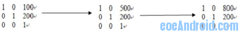
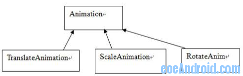

Android 详解动画（三）
清单 2. 算法
Animation a = ChildView.getAnimation()Transformation tm = a.getTransformation();
Use tm to set ChildView's Canvas;
Invalidate();
平移动画示意图
以上是以平移动画为例子来说明动画的产生过程，这其中又涉及到两个重要的类型，Animation和Transformation，这两个类是实现动画的主要的类，Animation 中主要定义了动画的一些属性比如开始时间、持续时间、是否重复播放等，这个类主要有两个重要的函数：getTransformation 和applyTransformation，在getTransformation中Animation会根据动画的属性来产生一系列的差值点，然后将这些差值点传给applyTransformation，这个函数将根据这些点来生成不同的Transformation，Transformation中包含一个矩阵和alpha值，矩阵是用来做平移、旋转和缩放动画的，而alpha值是用来做alpha动画的（简单理解的话，alpha动画相当于不断变换透明度或颜色来实现动画），以上面的平移矩阵为例子，当调用 dispatchDraw 时会调用 getTransformation 来得到当前的 Transformation，这个 Transformation 中的矩阵如下：
矩阵变换图

所以具体的动画只需要重载 applyTransformation 这个函数即可，类层次图如下：
动画类继承关系图

用户可以定义自己的动画类，只需要继承 Animation 类，然后重载 applyTransformation 这个函数。对动画来说其行为主要靠差值点来决定的，比如，我们想开始动画是逐渐加快的或者逐渐变慢的，或者先快后慢的，或者是匀速的，这些功能的实现主要 是靠差值函数来实现的，Android 提供了 一个 Interpolator 的基类，你要实现什么样的速度可以重载其函数 getInterpolation，在 Animation 的 getTransformation 中生成差值点时，会用到这个函数。
从上面的动画机制的分析可知某一个View的动画的绘制并不是由他自己完成的而是由它的父view完成，所有我们要注意上面TextView旋转一周的动画示例程序中动画的效果并不是由TextView来绘制的，而是由它的父View来做的。findViewById(R.id.TextView01).startAnimation(anim) 这个代码其实是给这个 TextView 设置了一个 animation，而不是进行实际的动画绘制，代码如下 :
public void startAnimation(Animation animation) { animation.setStartTime(Animation.START_ON_FIRST_FRAME);
setAnimation(animation);
invalidate();
}